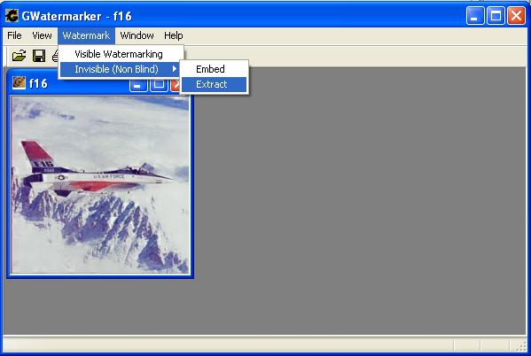

Welcome to Website of Prof. Saraju P. Mohanty
ISWAR
(Imaging System with Watermarking and Attack Resilience)
Core Algorithms R & D
Saraju P. Mohanty, Department of Computer Science and Engineering,
Software System Development
Rajan Sheth,
Adrain Pinto, and
Marina Chandy, Department
of Information Technology, St.
Francis Institute of Technology, Mumbai - 400 103,
Publications
- S. P. Mohanty, “ISWAR: An Imaging System with Watermarking and Attack Resilience”, ArXiv e-prints, 1205.4489, May, 2012, 21-pages.
- S. P. Mohanty, R. Sheth, A. Pinto, and M. Chandy, "CryptMark: A Novel Secure Invisible Watermarking Technique for Color Images", in Proceedings of the 11th IEEE International Symposium on Consumer Electronics (ISCE), 2007, pp. 1--6.
- S. P. Mohanty, K. R. Ramakrishnan and M. S. Kanakanhalli, "A DCT Domain Visible Watermarking Technique for Images", in Proceedings of the IEEE International Conference on Multimedia and Expo (ICME) (Vol. 2), pp. 1029-1032, 2000.
- S. P. Mohanty, K. R. Ramakrishnan and M. S. Kanakanhalli, "An Adaptive DCT Domain Visible Watermarking Technique for Protection of Publicly Available Images", in Proceedings of the International Conference on Multimedia Processing and Systems (ICMPS), pp.195-198, 2000.
- S. P. Mohanty, K. R. Ramakrishnan, and M. S. Kanakanhalli, "A Dual
Watermarking Technique for Images", in Proceedings of the 7th ACM International
Multimedia Conference (ACMMM) (Vol. 2), pp. 49-51, 1999.
- S. P. Mohanty, "Watermarking of Digital Images",
Masters Thesis, Department of Electrical Engineering, Indian Institute of
Science,
Features Offered
- Invisible-Robust
Watermarking
- Visible Watermarking
Technology Used
Downloads
Disclaimer: The softwares provided in this site are products of our research in last several years. We have presented them here with an objective of research dissemination only. There are inherent dangers in the use of any software downloading from the Internet, and we caution you to make sure that you completely understand the potential risks before any downloading. We will not be liable for any damages that you may suffer in connection with using, modifying or distributing any of these softwares.
Download EXE: ISWARwatermarker.zip (625 KB)
The Algorithm used for Visible Watermarking: Visible_Watermarking_Algorithm.pdf (64.5 KB)
The Algorithm used for Invisible Watermarking: Invisible_Watermarking_Algorithm.pdf (22.6 KB)
Difference Images (Difference between Original and Invisible Watermarked images) for three Images: difference_images.zip (591 KB)
Test Images for Invisible Watermarking. Various attacks performed on three Test Images. Stirmark Benchmark is used for testing the robustness of the Watermark.
- Invisible_lena_mig21.zip (493 KB)
- Invisible_f16.zip (1.68 MB)
Visible Watermark Embeding
1. Open the Image to be Watermarked in the tool Window.
2. Open the Visible Dialog Box.
3. Select the Watermark Image..
a. Top Left.
b .
c . Top Right.
d . Middle Left.
e .
f . Middle Left.
g . Bottom Left.
h .
i . Bottom Left.
5. Select the Intensity with which the watermark should be inserted.
6. Click the Embed button.

Invisible Watermarking -- Embeding
2. Open the Invisible Embed Dialog Box.
3. Select the Watermark Image. The Watermark Image should be binary. It can be of any size (even larger than the original image).
4. Enter the Watermark Key. The key should be from 6 to 56 characters.
5. Click the Embed button.
Invisible Watermarking -- Extraction

2. Select the Original Image.
3. Select the Watermark Image. (The same binary image used during embeding)
4. Enter the same Watermark Key which was used during embeding.
5.Click the Extract button.
a) If the Suspect Image received by the receiver and the the Watermarked Image send by the sender match, then the Owner is Authenticated.
b) If the Suspect Image received by the receiver and the Watermarked Image send by the sender match, then the Image does not contain the Watermark.
.